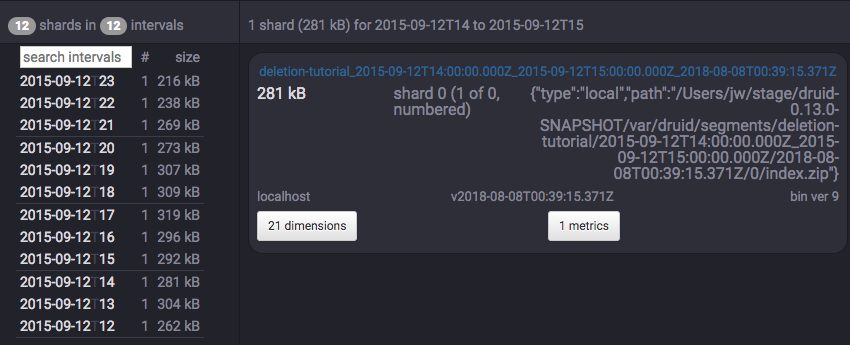
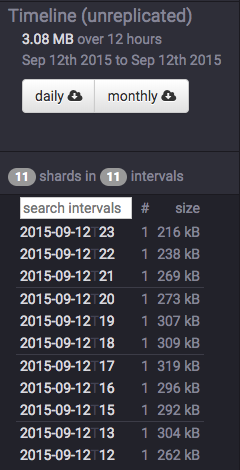

Looking for the latest stable documentation?
This tutorial demonstrates how to delete existing data.
For this tutorial, we'll assume you've already downloaded Druid as described in the single-machine quickstart and have it running on your local machine.
Completing Tutorial: Configuring retention first is highly recommended, as we will be using retention rules in this tutorial.
In this tutorial, we will use the Wikipedia edits data, with an indexing spec that creates hourly segments. This spec is located at examples/deletion-index.json, and it creates a datasource called deletion-tutorial.
Let's load this initial data:
curl -X 'POST' -H 'Content-Type:application/json' -d @examples/deletion-index.json http://localhost:8090/druid/indexer/v1/task
When the load finishes, open http://localhost:8081/#/datasources/deletion-tutorial in a browser.
Permanent deletion of a Druid segment has two steps:
Let's drop some segments now, first with load rules, then manually.
As with the previous retention tutorial, there are currently 24 segments in the deletion-tutorial datasource.
Click the edit rules button with a pencil icon at the upper left corner of the page.
A rule configuration window will appear. Enter tutorial for both the user and changelog comment field.
Now click the + Add a rule button twice.
In the rule #1 box at the top, click Load, Interval, enter 2015-09-12T12:00:00.000Z/2015-09-13T00:00:00.000Z in the interval box, and click + _default_tier replicant.
In the rule #2 box at the bottom, click Drop and Forever.
This will cause the first 12 segments of deletion-tutorial to be dropped. However, these dropped segments are not removed from deep storage.
You can see that all 24 segments are still present in deep storage by listing the contents of var/druid/segments/deletion-tutorial:
$ ls -l1 var/druid/segments/deletion-tutorial/
2015-09-12T00:00:00.000Z_2015-09-12T01:00:00.000Z
2015-09-12T01:00:00.000Z_2015-09-12T02:00:00.000Z
2015-09-12T02:00:00.000Z_2015-09-12T03:00:00.000Z
2015-09-12T03:00:00.000Z_2015-09-12T04:00:00.000Z
2015-09-12T04:00:00.000Z_2015-09-12T05:00:00.000Z
2015-09-12T05:00:00.000Z_2015-09-12T06:00:00.000Z
2015-09-12T06:00:00.000Z_2015-09-12T07:00:00.000Z
2015-09-12T07:00:00.000Z_2015-09-12T08:00:00.000Z
2015-09-12T08:00:00.000Z_2015-09-12T09:00:00.000Z
2015-09-12T09:00:00.000Z_2015-09-12T10:00:00.000Z
2015-09-12T10:00:00.000Z_2015-09-12T11:00:00.000Z
2015-09-12T11:00:00.000Z_2015-09-12T12:00:00.000Z
2015-09-12T12:00:00.000Z_2015-09-12T13:00:00.000Z
2015-09-12T13:00:00.000Z_2015-09-12T14:00:00.000Z
2015-09-12T14:00:00.000Z_2015-09-12T15:00:00.000Z
2015-09-12T15:00:00.000Z_2015-09-12T16:00:00.000Z
2015-09-12T16:00:00.000Z_2015-09-12T17:00:00.000Z
2015-09-12T17:00:00.000Z_2015-09-12T18:00:00.000Z
2015-09-12T18:00:00.000Z_2015-09-12T19:00:00.000Z
2015-09-12T19:00:00.000Z_2015-09-12T20:00:00.000Z
2015-09-12T20:00:00.000Z_2015-09-12T21:00:00.000Z
2015-09-12T21:00:00.000Z_2015-09-12T22:00:00.000Z
2015-09-12T22:00:00.000Z_2015-09-12T23:00:00.000Z
2015-09-12T23:00:00.000Z_2015-09-13T00:00:00.000Z
Let's manually disable a segment now. This will mark a segment as "unused", but not remove it from deep storage.
On http://localhost:8081/#/datasources/deletion-tutorial, click one of the remaining segments on the left for full details about the segment:

The top of the info box shows the full segment ID, e.g. deletion-tutorial_2016-06-27T14:00:00.000Z_2016-06-27T15:00:00.000Z_2018-07-27T22:57:00.110Z for the segment of hour 14.
Let's disable the hour 14 segment by sending the following DELETE request to the coordinator, where {SEGMENT-ID} is the full segment ID shown in the info box:
curl -XDELETE http://localhost:8081/druid/coordinator/v1/datasources/deletion-tutorial/segments/{SEGMENT-ID}
After that command completes, you should see that the segment for hour 14 has been disabled:

Note that the hour 14 segment is still in deep storage:
$ ls -l1 var/druid/segments/deletion-tutorial/
2015-09-12T00:00:00.000Z_2015-09-12T01:00:00.000Z
2015-09-12T01:00:00.000Z_2015-09-12T02:00:00.000Z
2015-09-12T02:00:00.000Z_2015-09-12T03:00:00.000Z
2015-09-12T03:00:00.000Z_2015-09-12T04:00:00.000Z
2015-09-12T04:00:00.000Z_2015-09-12T05:00:00.000Z
2015-09-12T05:00:00.000Z_2015-09-12T06:00:00.000Z
2015-09-12T06:00:00.000Z_2015-09-12T07:00:00.000Z
2015-09-12T07:00:00.000Z_2015-09-12T08:00:00.000Z
2015-09-12T08:00:00.000Z_2015-09-12T09:00:00.000Z
2015-09-12T09:00:00.000Z_2015-09-12T10:00:00.000Z
2015-09-12T10:00:00.000Z_2015-09-12T11:00:00.000Z
2015-09-12T11:00:00.000Z_2015-09-12T12:00:00.000Z
2015-09-12T12:00:00.000Z_2015-09-12T13:00:00.000Z
2015-09-12T13:00:00.000Z_2015-09-12T14:00:00.000Z
2015-09-12T14:00:00.000Z_2015-09-12T15:00:00.000Z
2015-09-12T15:00:00.000Z_2015-09-12T16:00:00.000Z
2015-09-12T16:00:00.000Z_2015-09-12T17:00:00.000Z
2015-09-12T17:00:00.000Z_2015-09-12T18:00:00.000Z
2015-09-12T18:00:00.000Z_2015-09-12T19:00:00.000Z
2015-09-12T19:00:00.000Z_2015-09-12T20:00:00.000Z
2015-09-12T20:00:00.000Z_2015-09-12T21:00:00.000Z
2015-09-12T21:00:00.000Z_2015-09-12T22:00:00.000Z
2015-09-12T22:00:00.000Z_2015-09-12T23:00:00.000Z
2015-09-12T23:00:00.000Z_2015-09-13T00:00:00.000Z
Now that we have disabled some segments, we can submit a Kill Task, which will delete the disabled segments from metadata and deep storage.
A Kill Task spec has been provided at examples/deletion-kill.json. Submit this task to the Overlord with the following command:
curl -X 'POST' -H 'Content-Type:application/json' -d @examples/deletion-kill.json http://localhost:8090/druid/indexer/v1/task
After this task completes, you can see that the disabled segments have now been removed from deep storage:
$ ls -l1 var/druid/segments/deletion-tutorial/
2015-09-12T12:00:00.000Z_2015-09-12T13:00:00.000Z
2015-09-12T13:00:00.000Z_2015-09-12T14:00:00.000Z
2015-09-12T15:00:00.000Z_2015-09-12T16:00:00.000Z
2015-09-12T16:00:00.000Z_2015-09-12T17:00:00.000Z
2015-09-12T17:00:00.000Z_2015-09-12T18:00:00.000Z
2015-09-12T18:00:00.000Z_2015-09-12T19:00:00.000Z
2015-09-12T19:00:00.000Z_2015-09-12T20:00:00.000Z
2015-09-12T20:00:00.000Z_2015-09-12T21:00:00.000Z
2015-09-12T21:00:00.000Z_2015-09-12T22:00:00.000Z
2015-09-12T22:00:00.000Z_2015-09-12T23:00:00.000Z
2015-09-12T23:00:00.000Z_2015-09-13T00:00:00.000Z